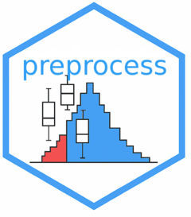

Sepages pipeline guide
pipeline-guide.RmdOverview
This vignette briefly introduces the preprocessing methodology developed for the SEPAGES study.
For full details, including theoretical background, code examples, and recommendations, please refer to the complete documentation available online:
Structure of the book
The online documentation includes the following chapters:
- Example data structure
- Handling values below LOD
- Standardising on protocol variables
- Recommended variable names
- References
The book is updated regularly and contains reproducible code, figures, and links to relevant references.
Citation
If you wish to cite the preprocessing methodology, please cite:
Rolland M., SEPAGES preprocessing pipeline, 2025. Available
at:
https://bookdown.org/mj_rolland/sepages_pipeline_doc/